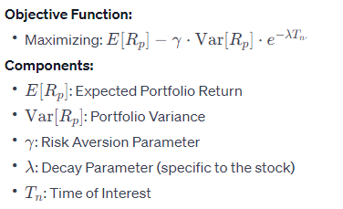

My Projects
Page
🌟 Featured Projects Introduction:
Welcome to my showcase of featured projects! Each project represents a journey of innovation and problem-solving, demonstrating my expertise in coding languages and my ability to transform data into actionable insights. Explore these projects to witness firsthand the impact of our work in driving meaningful results and fostering innovation.
Robust Portfolio Optimization with Risk Decay:
Description:
This project involves the implementation of a portfolio optimization algorithm aimed at optimizing investment strategies based on risk assessment and predictive analytics. The algorithm analyzes historical market data to optimize the allocation of assets within a portfolio.
Technologies Used:
Python programming language was utilized for implementing the portfolio optimization algorithm. Techniques such as risk assessment, predictive analytics, and collaborative development were employed to enhance the robustness and effectiveness of the algorithm.
Key Achievements:
The project achieved significant improvements in portfolio performance and risk management, contributing to informed investment decision-making and maximizing returns for investors.
Project Link:
project visual Presentation
This is the risk decay model
Portifolio Before and After Optimization
 Each dot reperesents a portfolio after performing one hundred thousand simulations but the circled dot represents the most suitable portifolio without risk decay (before optimization)
Each dot reperesents a portfolio after performing one hundred thousand simulations but the circled dot represents the most suitable portifolio without risk decay (before optimization)
 Each dot reperesents a portfolio after performing one hundred thousand simulations but the circled dot represents the most suitable portifolio with risk decay(after optimization)
Each dot reperesents a portfolio after performing one hundred thousand simulations but the circled dot represents the most suitable portifolio with risk decay(after optimization)
Diabetes Prediction SVM System:
Description:
This project involves the development of a machine learning model aimed at predicting diabetes risk factors based on patient data. Using Support Vector Machine (SVM) algorithm, the model analyzes various features to predict the likelihood of an individual developing diabetes.
Technologies Used:
Python programming language was utilized for data preprocessing, feature engineering, and implementation of the SVM algorithm. Libraries such as NumPy, Pandas, and Scikit-learn were employed for data manipulation, analysis, and model development.
Key Achievements:
The project achieved high accuracy in predicting diabetes risk factors, contributing to advancements in healthcare by
enabling early detection and prevention of diabetes.
Project Link: Description: This project focuses on the development of a regression model to detect fraudulent credit card transactions, thereby enhancing financial security measures. The model analyzes transactional data to identify patterns indicative of fraudulent activity.
Technologies Used: Python programming language was employed for data preprocessing, feature selection, and regression analysis. Advanced techniques such as outlier detection, feature engineering, and regression modeling were applied to improve model performance. Key Achievements: The project successfully achieved high accuracy in detecting fraudulent transactions, contributing to reducing financial losses for businesses and enhancing trust in financial transactions. Project Link:
Credit Card Fraud Detection Regression Model: